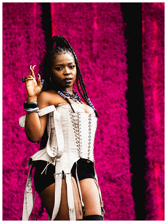
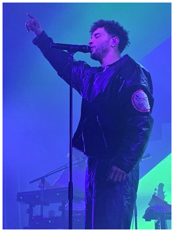
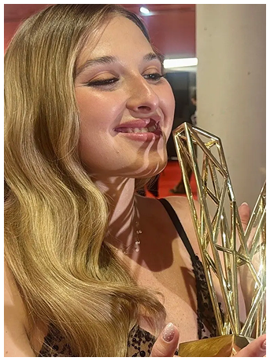

Victoires De La Musique
Victoires Du Jazz
Victoires De La Musique Classique
L'association
Vote
Musique
Jazz
Musique Classique
Choisis le
gagnant des
Victoires de
la Musique
Theodora

Voter
Disiz

Voter
Helena

Voter
✕
Voter pour
Votre adresse e-mail
Confirmer mon vote
Victoires De La Musique
Victoires Du Jazz
Victoires De La Musique Classique
L'association
Vote
Musique
Jazz
Musique Classique